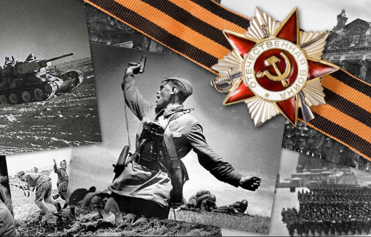
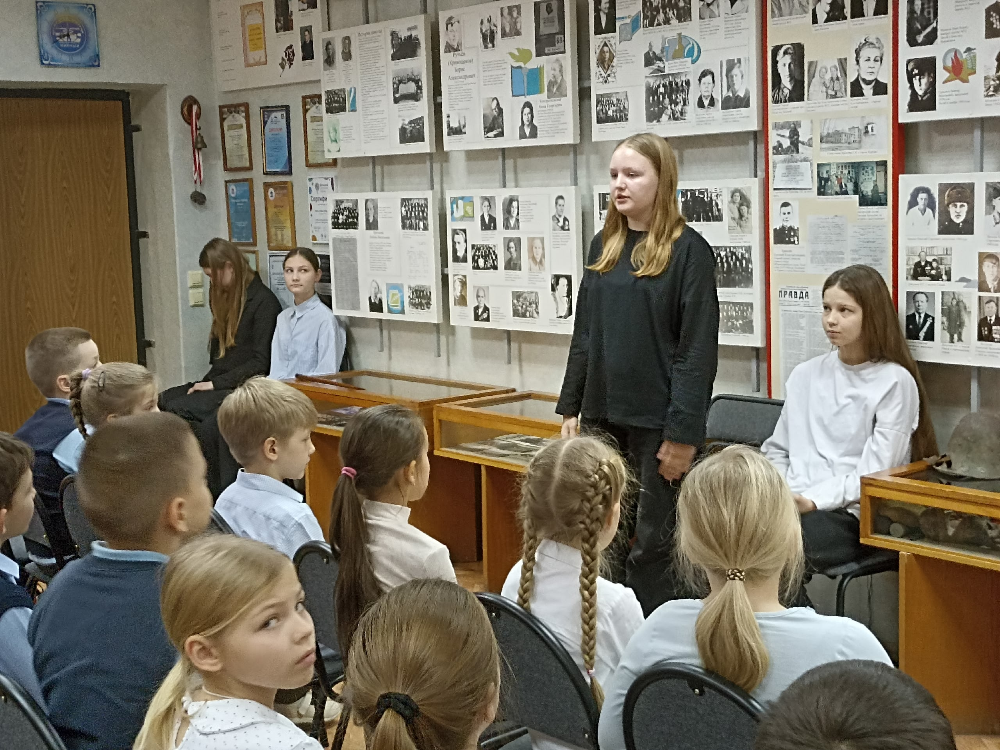
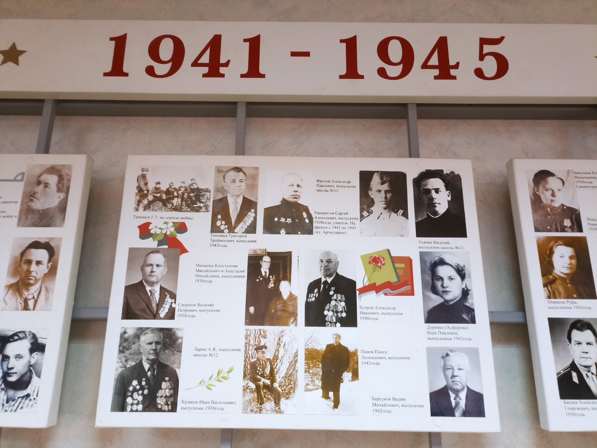

Интерактивная экспозиция, посвящённая истории школы и её выпускникам. Отсканируйте QR-код у стенда, чтобы узнать больше!
Название музея: Музей истории школы №12
Профиль: историко‑краеведческий
Фонд: около 700 единиц хранения
Цель приложения: интерактивная экспозиция
Целевая аудитория: посетители музея любого возраста
Ученики ведут поиск, собирают воспоминания ветеранов и изучают архивы.
Выпускники передают новые экспонаты и делятся школьными воспоминаниями.
Нажмите на карточку, чтобы посмотреть фотографии и описание

Стенд с фотографиями учителей и выпускников, ушедших на фронт.

Информация о меротиятиях, проходящих в музее.

Стенды расположеные в музее.
Проверьте свои знания! Внимательно прочитайте подсказку и введите правильный ответ.
В Зале боевой славы хранится память о выпускниках и учителях. Именем какого прославленного лётчика, Дважды Героя Советского Союза, названа улица, на которой находится наш лицей? В 1943 году в районе Синявино его парашют не раскрылся...
Идея, контент
Дизайн
Материалы